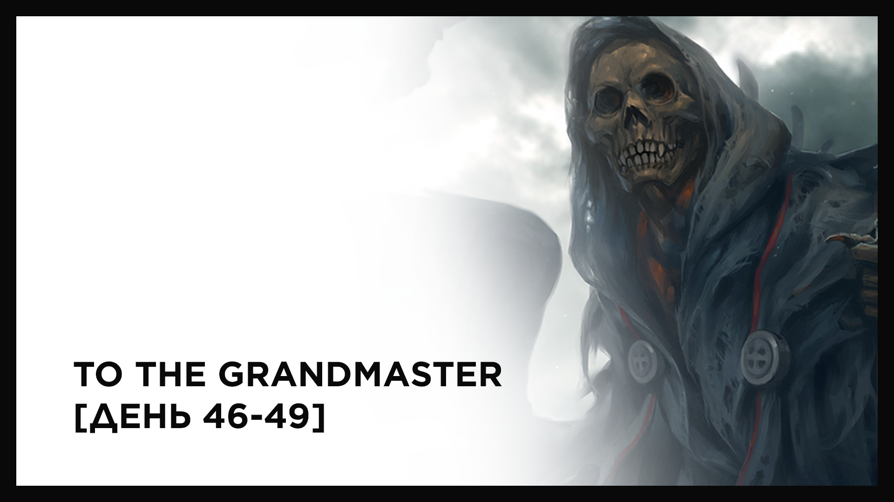

Здарова, мальчуки!
Для поддержки и популяризации chaosageDaily, новый пост про прогресс крафта магистра я решил написать здесь. Вряд ли, конечно, так будет постоянно: во-первых, некоторые дни абсолютно безынтересные, чтобы размазывать их на отдельные статьи, а во-вторых, на старте Обозревателя у него будет меньше аудитории, чем у игрового Форума. Поэтому постараюсь или балансировать, или придумать разные форматы.
Акция ВК (400), ОС (107), Исполнитель желаний (38000), Дейлик (201), Лес (11713 – 11*140), Охотник (710), Следопыт (882).
Суммарный доход: 50453 (4.07% от фулл комплекта).
Готовые шмотки: Риза магистра(мф), Посох магистра.
*Суммарное отставание от плана (1% в день) составляет 13.255%, в серебре 164136.
**Суммарный заработок за ВСЁ время: 354087 (~7697 / сутки).
Акция ВК (800), Охотник (171), Следопыт (100), Лес (1754-2*140).
Суммарный доход: 2545 (0.1% от фулл комплекта).
Готовые шмотки: Риза магистра(мф), Посох магистра.
*Суммарное отставание от плана (1% в день) составляет 15.155%, в серебре 187664.
**Суммарный заработок за ВСЁ время: 354087 (~7429 / сутки).
Акция ВК (400), Дейлик (170), Шахта (85), Следопыт (1711), Охотник (5265), Лес (8892-8.6*140).
Суммарный доход: 15319 (1.23% от фулл комплекта).
Готовые шмотки: Риза магистра(мф), Посох магистра, Кольцо магистра.
*Суммарное отставание от плана (1% в день) составляет 14.925%, в серебре 184816.
**Суммарный заработок за ВСЁ время: 369406 (~7538 / сутки).
К сожалению, почти весь март ушёл на дела IRL, поэтому фарм в большинстве дней был медленный. К счастью, больше таких отвлекающих факторов плоть до конца челленджа не предвидится, поэтому буду стараться перевыполнять план. Из последних новостей:
— появился чертеж Амулета, в процессе чертеж Робы (обмениваю у Gong‘a). Итого в наличии: Амуль, Перчатки, Кольцо, Роба.
— взял профессию Следопыт, чтобы собирать кварц и рубить брёвна. И то, и другое выгоднее Охотника в предгорке.
— взял золотую медальку лесоруба ??? (в планах нарубить до 40.000 и остановиться).
На мой взгляд, интересно то, что 99.9% из всего заработка — “подножный”. То есть не нужно придумывать себе уникальный или боеспособный билд, достаточно лишь обмазываться нужными печатями и сидеть в городе (каналка), в 5 шагах от города (лес), в 15 шагах от города (кварц). Конечно, если только у вас много свободного времени xD